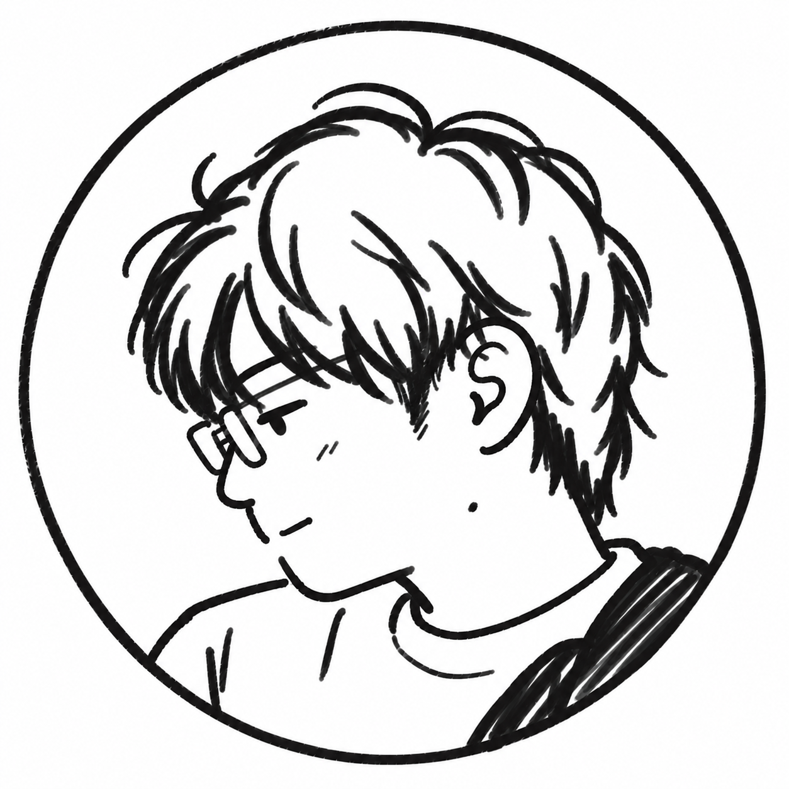

FEATURED · WEB TOOL / UI DESIGN / AI-ASSISTED DEVELOPMENT
Aoi Tools
Web制作で感じた小さな不便を解消するために、3つのWebツールを企画・制作しました。ツールごとに目的や必要な技術が異なるため、要件やUIは自分で整理し、実装ではCodexを積極的に活用しています。
- Webパーツ図鑑UIパーツを探す
- Wireframe Makerワイヤーフレームを作る
- Responsive Preview LabPC / スマホ表示を比較する


WEB / UI DESIGN · AI IN PRACTICE
ChatGPT・Codex・Gemini・Copilotを、Web制作の要件整理・実装・検証、情報整理、業務の効率化に活用しています。
AIに任せきるのではなく、自分で内容を確認しながら、必要な工程に取り入れています。
HOW I WORK
Web制作では要件整理や構成の検討、実装支援、確認作業など、工程によってAIの役割を分けています。
自分で判断できる部分は自分で決め、実装量が多い部分や、通常の対応範囲を超える技術ではCodexなどを活用します。生成された内容はそのまま使わず、実際の画面やコードを確認して修正します。
制作以外でも、Google Driveに蓄積したナレッジの参照や、Excel作業の効率化などにAIを取り入れています。
自分が担うこと
AIを使うところ
SELECTED CASE STUDIES
Web制作、学習ツール、Knowledge運用、業務改善など、目的に応じてAIの使い方を変えています。
FEATURED · WEB TOOL / UI DESIGN / AI-ASSISTED DEVELOPMENT
Web制作で感じた小さな不便を解消するために、3つのWebツールを企画・制作しました。ツールごとに目的や必要な技術が異なるため、要件やUIは自分で整理し、実装ではCodexを積極的に活用しています。

AI WORKFLOW / KNOWLEDGE MANAGEMENT
蓄積したナレッジから、課題に関係する資料だけを探して参照する運用を整えています。
事例の詳細を読むBUSINESS / EXCEL / AI WORKFLOW
定型的な集計や確認作業を、繰り返し使える手順やプロンプトとして整理しています。
事例の詳細を読むA HUMAN-LED PROCESS
自分 + AI
自分
自分 + AI
自分
自分 + AI
TOOLS IN CONTEXT
要件整理 / 構成 / Knowledge参照
Web制作 / 実装支援
調査 / 情報整理 / レビュー
Excel / 定型作業 / 手順整理
Knowledgeの保管 / 管理
Figma · Photoshop · Illustrator · HTML · CSS · JavaScript · GitHub · Cloudflare

PROFILE
Webサイトの更新・制作、Web/UIデザインを中心に取り組んでいます。
ChatGPTやCodexなどのAIも制作工程に取り入れ、要件整理、実装支援、情報整理、業務改善など、目的に応じて使い分けています。
AIにすべてを任せるのではなく、自分で内容を確認・判断しながら、制作できる範囲を広げています。